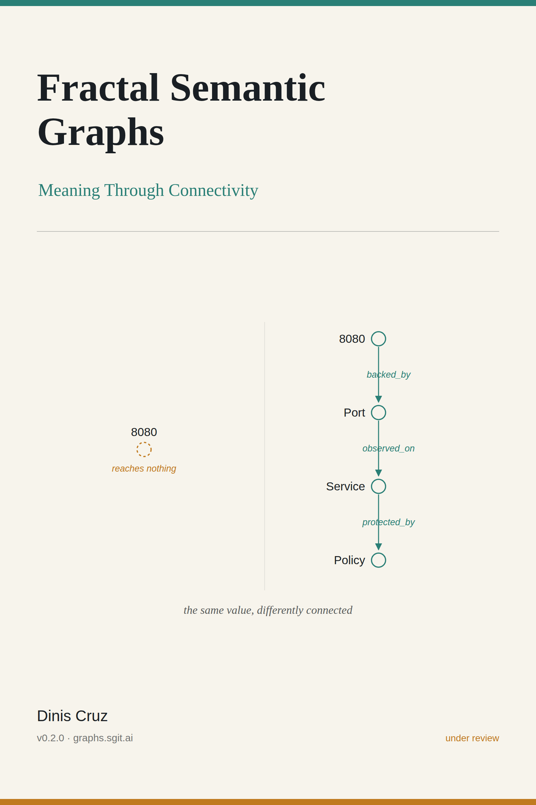

Fractal Semantic Graphs: Meaning Through Connectivity

A node connected to nothing is literally meaningless. This book is what follows from taking that seriously.
This is v0.2.0, not a finished book. The argument is whole and the evidence is real, but a review pass is running now: expect corrections, sharper examples and new material. Buy it once and every future version is yours.
| Version | v0.2.0 · under review |
| Length | 18 chapters · 38,029 words · 119 pages |
| Author | Dinis Cruz |
| Licence | CC BY 4.0 — the text is free to share and adapt with attribution. |
What it is
Two variables both hold 8080. One reaches a type, a library and a pinned version; the other reaches nothing. The difference is not in the value, it is in the connectivity — and once you accept that, a great deal follows.
This book argues that meaning lives in edges rather than in labels, and then shows the argument running. It sets out a grammar where every edge is a verb with a distinct inverse and the generic association edge is banned; it explains why schema-first breaks at every boundary and what to do instead (bridge vocabularies through anchor nodes rather than merging them, which erases the disagreement); it makes confidence computable and honest uncertainty the default; and it follows the fractal principle down through every altitude, where the same grammar holds at every level of zoom.
What separates this edition from the first is that the argument is no longer only argued. It is demonstrated by a working estate: a document decomposed to the word with stable identities, an engine that computes meaning deterministically and shows its provenance, and registers where a human corrects what the machine proposes. Every figure in the book was taken from the running system.
Who it is for
Engineers, architects and anyone who has watched two teams use the same word to mean different things and had to make the systems agree.
How this book is versioned
This book carries its own version, and that version moves only when the book’s content moves — the site around it releases far more often. v1.0.0 is reserved for the actual final release, so v0.2.0 says plainly that a review pass is still running. The machine-readable record is book.json, which holds the version and the SHA-256 of every chapter; a build gate fails if content changes without the version moving.